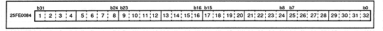
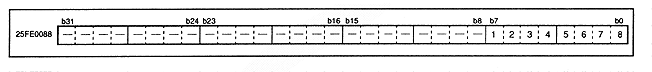

-
■ DSP program RAM data port
- Figure 3.15 shows the details of the DSP program RAM data port. When data stored in the program RAM area is written from the CPU, the data is loaded into the program RAM. After loading, the program control port program RAM address is incremented by one. However, writing is prohibited during program execution (when the program execution control flag is 1). This port is for writing only.
Figure 3.15 DSP program RAM data port (register: PPD) Initial value undefined

-
■ DSP data RAM address port
- Figure 3.16 shows the details of the DSP data RAM address port. Set the data RAM address to be accessed. However, writing is prohibited during program execution (when the program execution control flag is 1).
Figure 3.16 DSP data RAM address port (register: PDA) Initial value 00000000H

- Data RAM selection bits (1-2 in Figure 3.16 [bit 7-6])
RA7-6 (W) RAM select bit bit7-6
- Indicates the page of RAM data to be read. Table 3.5 shows the RAM page selection.
Table 3.5 RAM page selection
bit | Selected RAM page |
RA7 | RA6 |
0 | 0 | Select RAM0 |
0 | 1 | Select RAM1 |
1 | 0 | Select RAM2 |
1 | 1 | Select RAM3 |
- Data RAM address (3 to 8 [bit 5 to 0] in Figure 3.16)
RA5-0 (W) RAM address bit5-0
- Specify the address of the data RAM to be read.